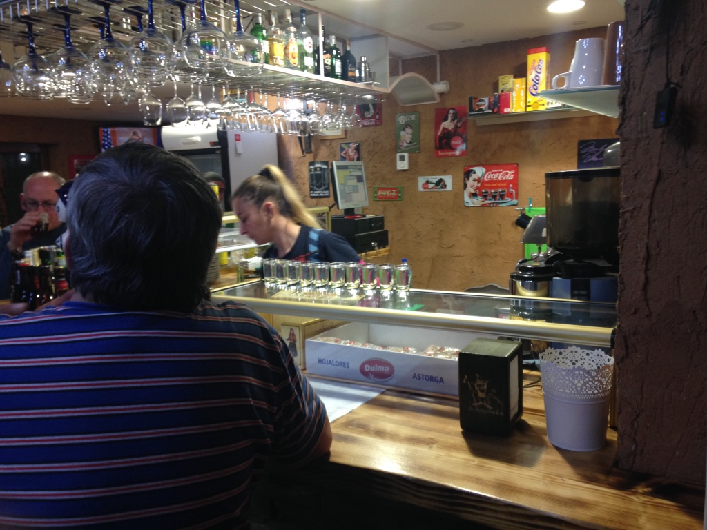

September 28, 2017 - Day 22
To be yourself–
Easy to say, hard to do.
What we think is not ours.
What we believe is shaped by others.
The only thing we own is
what we feel.
Our inner compass, the way we connect with
The outer world; only we can see and touch and
Feel the way we do. Never lose it.
Never let it go.
Met Enrico and Sia today. Italian Photographer, Jewish Psychologist. Good vibes, good conversation. Talked about the nature of identity and self, meditation, instant gratification, feelings.
What does it mean to feel? To listen to what our heart has to say. –Sia
The strangest thing happened while I was talking with Sia: the pain in my legs had suddenly disappeared! The sharpness in my hip, the knot in my foot, they vanished like a puff of air. I’m not complaining, but what exactly happened? It seems like the Camino has given me new legs.
We got lost. We were supposed to stop in Hospital de Orbigo, but ended up at Villadangos del Paramo. We’re staying at an albergue called La Casa de Jesus.
It’s Enrico’s birthday, but he’s decided to cook for us. Risotto. I provided the wine, Sia the cake. A lovely American woman from California and a guy around my age from Washington D.C. joined our celebration.
Enrico is cool. He’s genuine, contemplative, and expressive with his emotions and thoughts, all the while possessing a humble confidence that I truly admire. He was fascinated by what I had to say about psychology, meditation, and the creative process. I was captivated by the way he described the art of photography and his prior journey into the Swiss Alps. I wish he wasn’t leaving tomorrow.
September 29, 2017 - Day 23
The Meseta makes up ⅓ of the Camino. It’s a barren wasteland of wheat, desert, and more wheat. Not much to see, but it’s peaceful. Though I understand why people complain about it, or skip it entirely. The roads stretch for miles; it’s hot and arid; any sign of life appears to have been sucked dry. But what is a pilgrimage without a little bit of suffering?
I’ve made it to the city of Astorga. Looking forward to the greenery, hills, and mountains of the Galicia region.
It’s beautiful here. There’s a large park nearby. I had a picnic with Mariam, a German girl who had only started her Camino a few days ago in Leon. She’s reserved and somewhat aloof. But nice. Wonder what was on her mind. We took a nap during Siesta. It’s a part of the Spanish culture – don’t work too hard, relax. America needs more Siesta.
Sia and Enrico arrived later in the day. I found them in the kitchen cooking couscous. We had dinner together. It was Enrico’s last day on the Camino. I’ve only known him for a day, but he feels like a brother.
In the evening, Enrico and I went to the park. The sound of snare drums, horns, and brass instruments filled the air. There were children playing music, perhaps practicing for a performance. They looked like they were having a lot of fun. Enrico took some pictures. We sat and listened for awhile, cherishing the moment. I felt happy.
Thank you for your presence, Enrico.
September 30, 2017 - Day 24
I’m in the Galicia region now. Mountains, vegetation, life surrounds me. I feel at home, up in the clouds and mountains. I saw a blackberry bush. It reminded me of M.
Met an energetic, charming American named Jackie.
“Hey! You remind me of another beautiful young man I met just a few days ago.” I blushed – I am not so used to receiving compliments.
Back home, she’s a therapist. Said this was the first time in her life that she was taking care of herself and not others.
It’s so amazing to be here. I haven’t thought about life back home at all! I’ve just been so focused on trying to take it all in, you know? Oh, look at that flower! Beautiful huh? My husband gets worried so he texts me every night, but I keep saying ‘I’m fine, I’m fine!’
A few days ago, I met this young woman from Australia – she looks about your age – who had decided to walk because her mother had recently died. She was so lost, she just wanted the pain to stop. On a whim she packed her things and started walking through Australia. And now she’s here. Still walking.
But here’s the crazy part: she met a guy from Switzerland here. The kicker is that his mother had also recently died! And he was walking for the same reasons – all the way from Switzerland! Is that destiny or what? Now they’re inseparable. They’ve been walking together ever since.
The Camino - there’s just something special about it. I believe in God, and I believe that he put them together for a reason. But, you could also say it was the Camino. It had provided them with what they needed most: a person who could understand their pain.
I’m in Foncebadón. Met Terra and Kristen. Terra is from Nevada, and Kristen is from California. Also met a guy from Northern Spain, Shanti – he’s really cool. Shanti and I share a love for travel, mountains, the world. He’s a photographer.
Dinner was absolutely ludicrous. The hospitalero was a total control freak.
In donation-based albergues, pilgrims are expected to assist with dinner preparations and cleaning. But here, people were cutting vegetables in the “wrong” way. The hospitalero scoffed at them, then deicded to cut the vegetables himself; things had to be perfecto. All-or-nothing. Apparently, no one was doing anything right, so he ended up preparing the entire dinner for all 18 of us.
I thought it was hilarious but Terra and Kristen didn’t – they had been reprimanded by our fellow perfectionist.
Once we finished dinner, the hospitalero invited everyone to have chupitos – shots – at the only bar in town.
Terra: “I thought he hated us, but now he’s buying everyone shots.”
